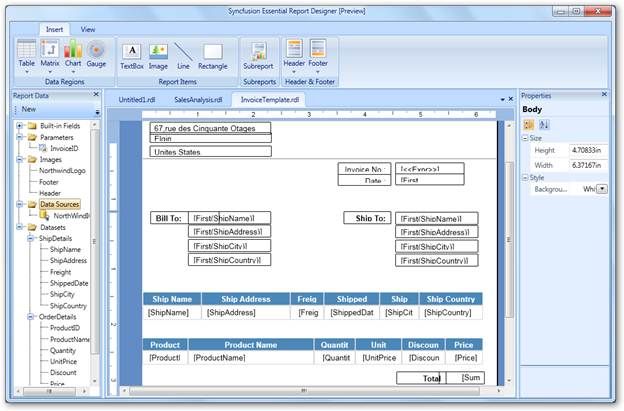

It can be used to design data in a variety of interactive formats and place report items such as data regions, text boxes, images, rectangles, and lines in the report. You can also add groups, expressions, parameters, filters, visibility options, and formatting to the report items.

Figure 2: Essential Report Designer WPF with Report Items